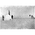
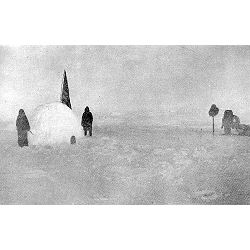
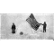
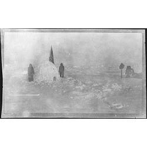
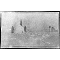
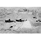
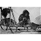

| |
|
|
|
|
|
|
 |
 |
 |
His polar pictures fare little better upon analysis. Opposite pages 300 and 301 in his book, Cook printed two pictures representing his igloo at the North Pole, which contain little detail and no discernible shadows.
 Cook
attributed their washed-out
appearance to the non-actinic light at the Pole, which caused a
“blue haze over
everything” and a diffuse effect on the film.
Cook
attributed their washed-out
appearance to the non-actinic light at the Pole, which caused a
“blue haze over
everything” and a diffuse effect on the film.  |
 |
 |
|
 |
The
original photo, recovered
from the Library of Congress, strongly indicates that it has been
intentionally
overexposed in developing. This is shown by the light
appearance of
the pure black frame line. There is also evidence of
selective dodging
and burning to bring out some details, such as the igloo, and to
obscure
others.Donald MacMillan reported that one of Cook’s Inuit companions told him that this "polar igloo" was built near Cape Faraday on the eastern shore of Ellesmere Land in the spring of 1909. By that time Cook had abandoned one of his sledges and all of his dogs. No dogs and a portion of only one sledge are visible in either of Cook's polar igloo photographs, though he claimed to have two sledges and dogs at the Pole.
Other photographs indicate misrepresentation as well, when compared with original prints now in the Library of Congress. In the one opposite page 172,
the original
shows definite shadows of measurable
objects, none of which are long enough for even the highest sun angle
Cook
would have experienced on the outward trip—12 degrees. This
picture must
have been taken when the sun would have been at a far higher angle than
implied
by its position in the text.Proponents have often pointed to one of Cook's photos as evidence in his favor. The one opposite page 269, labeled “Mending near the Pole,”
has shadows
appropriate to a sun angle of 12 degrees,
but this could be a coincidence or even an easily faked deception,
which
in isolation proves nothing. | «- Cook's “Stone Age Winter” | Cook's diaries -» |